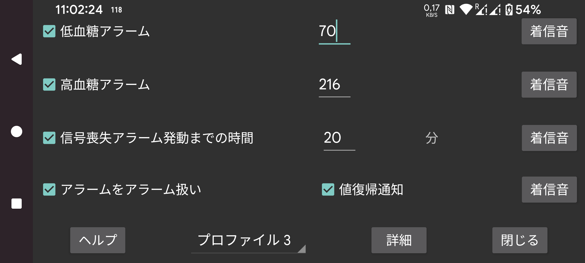

ar be de es fr hi it ja nl pl pt ru sv tr uk uz zh en
Bluetooth 経由で受信したストリーム値は、低血糖アラームと高血糖アラームの設定に使用できます。
この値以下になるとアラームが鳴る値です。
この値以上になるとアラームが鳴る値です。
Bluetooth 経由で血糖値を受信しない状態が何分間続くとアラームが鳴るかを指定します。
アラームは以下のいずれかの条件が満たされたときに 停止 します:
- 指定した期間が経過した場合;
- 曲線ビューがタッチされた場合;
- Juggluco の Android 通知がタッチされた場合(ロック解除状態で);
- Juggluco のアラーム通知のキャンセルボタンがタッチされた場合;
- フローティング血糖 がタッチされた場合。
センサーが動作しないことがあります。これをオンにすると、センサーが再び動作したときに通知されますが、Juggluco アプリ自体で値が欠落していることを確認した場合のみです。Juggluco の通知やウォッチフェイスからのみ値の欠落に気づいた場合は、値が利用可能になった通知は呼び出されません。
各アラームについて、再生する着信音とその時間を指定できます。
「アラームをアラームとして扱う」をチェックすると、低血糖、高血糖、信号喪失アラームで再生される着信音が アラーム サウンドカテゴリで扱われます。これは Android の設定で、その音量がアラーム音量レバーで管理され、端末全体の音をオフにしたりバイブレーションに設定しても消音されないことを意味します。アラームをアラームとして扱う がチェックされていない場合、スマートフォンでは通知音量レバー、Samsung Galaxy Watch 4-7 ではシステムレバーが使用されます。値が利用可能になった通知は常にこのモードです。
これらの設定がどの プロファイル のものかを指定します。これによりアラームと音声の設定を切り替えられます。詳細 → スケジュールで、特定の時刻にプロファイルを自動的にオンにするよう指定できます。
詳細アラームメニュー: 重度の低血糖、重度の高血糖、まもなく低血糖、まもなく高血糖。特定の時刻にプロファイルを有効にするスケジュールも設定できます。